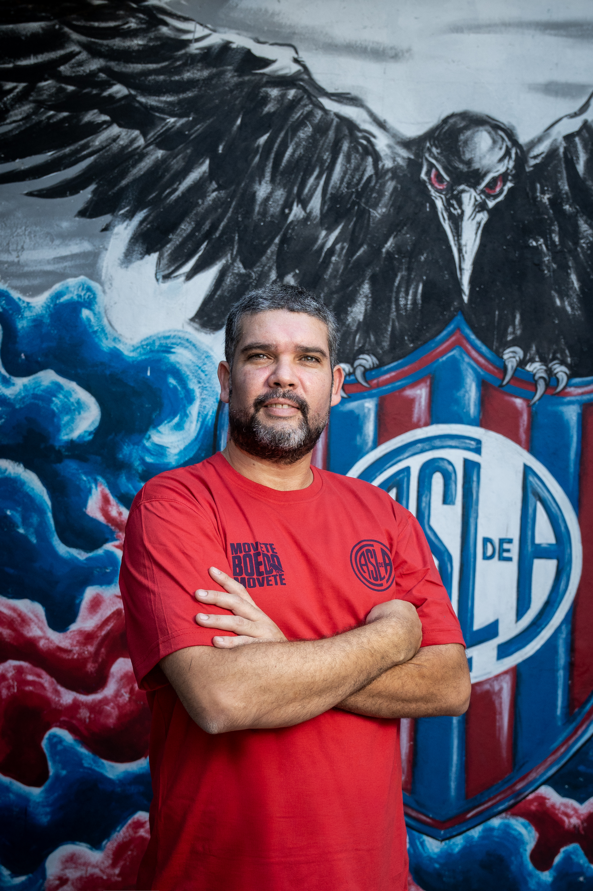

Movete Boedo Movete es una Agrupación formalmente fundada hace 3 años e integrada por un centenar de socios y socias que militamos y participamos en la vida institucional del Club, varios de los cuales caminamos juntos desde hace más de dos décadas.
Nos estructuramos con un organigrama interno en el que distribuimos roles y responsabilidades y, hasta la fecha, enfocamos nuestro trabajo en las áreas de legal, contable, acción social, comunicación, prensa, sistematización de datos, intendencia, cultura, inclusión y género, marca y producción gráfica y audiovisual.
Tenemos una Sede propia ubicada en la calle 33 Orientales 2073 del barrio de Boedo. Allí llevamos adelante todas las actividades de la Agrupación, realizamos eventos culturales y, también, abrimos las puertas a los hinchas del Club cuando San Lorenzo juega de visitante para compartir un momento Sanlorencista. En esta etapa preelectoral, nuestra casa también ha oficiado como espacio de reunión y comunión con quienes se han acercado para debatir en profundidad los ejes de trabajo que nos preocupan de cara al futuro.
Desde antes de la fundación de MBM, quienes integramos esta agrupación llevamos años al servicio del resguardo institucional, habiendo cada uno de nosotros sido partícipes de momentos relevantes de la historia de San Lorenzo.
Siempre Casla Nunca SA. En MBM se nuclean Sanlorencistas que en el año 2000 han batallado contra ISL, que trabajaron en la importancia de establecer el 30/11 como Día del Hincha, que entre 2008 y 2011 denunciaron y expusieron las nefastas consecuencias que nos iba a traer el Grupo Inversor que nos dejó al borde de un descenso en 2012 y que en 2016 confeccionaron e incluyeron en el Estatuto Social la figura del Plebiscito, que es el único real resguardo institucional contra la intromisión de capitales privados en la administración del Club.
Vuelta a Boedo. Nos enorgullece que en nuestra agrupación haya verdaderos guardianes de la Vuelta a Boedo. En MBM hay compañeros que han impulsado la causa desde sus inicios, que movilizaron y acompañaron en todas las marchas, que dieron la batalla cultural y comunicacional para lograr que se convirtiera en Cuestión de Estado, que generaron aportes sustanciales y fundamentales para la argumentación legal y técnica que propició la recuperación de la Plaza Lorenzo Massa, que hicieron estudios con urbanistas reconocidos para generar publicaciones que elevaron el nivel de la discusión pública, que impulsaron estrategias de marketing y de militancia territorial que permitieron masificar la causa y, asimismo, que se ocuparon de denunciar las sistemáticas entregas y traiciones que sufrimos en estos últimos 10 años en torno a la Causa Madre Sanlorencista.
Construcción Identitaria del Sanlorencismo digno. Durante más de una década, varios integrantes de MBM fuimos parte de DeBoedoVengo, espacio desde el cual traccionamos por la construcción identitaria de un Sanlorencismo digno, enarbolando las banderas del San Lorenzo No Se Vende, Sin Hinchas No Se Juega, la Vuelta a Boedo y el respeto por nuestros valores fundacionales.
Género. Durante varios años, compañeras de MBM participaron del espacio San Lorenzo Feminista. Desde la Comisión de Salud articularon con la Campaña Nacional por la Despenalización del Aborto, la aprobación de la Ley IVE, desarrollaron diferentes conversatorios sobre memoria y juventudes, derechos humanos y educación sexual integral (ESI). Asimismo, acompañaron al plantel de fútbol femenino en la adecuación de la disciplina en su etapa de profesionalización.
San Lorenzo Federal. Compañeras de MBM participaron en el área de Mujeres, Géneros y Diversidades del Departamento de Peñas de San Lorenzo. A través de la articulación con diferentes peñas de todo el país se desarrollaron jornadas y actividades en el marco de la reivindicación de un Club nacional, popular y federal.
Desde nuestros inicios, en MBM nos dedicamos a la defensa institucional de San Lorenzo de Almagro, actuando ante cada situación de crisis dirigencial, económica y estatutaria.
Estructuramos la interpretación estatutaria, avanzamos en los acuerdos políticos y lideramos las manifestaciones públicas en contra de los vaciadores para lograr que se adelantaran las elecciones.
Cuando las mezquindades de la interna política nos arrebataron en la Inspección General de Justicia el derecho a ir a las urnas, fuimos los únicos que apelamos dicha resolución y elevamos el reclamo hasta la Cámara Civil.
Denunciamos los Estados Contables en los que se pretendían aprobar mutuos sin documentación respaldatoria por 3 millones de dólares, donde además desaparecía el 10% del pase de Agustín Giay. Así fue como logramos suspender la Asamblea en la que se pretendía vulnerar los derechos económicos de la Institución, trazando una jurisprudencia clave a la hora de exponer las maniobras fraudulentas de nuestros dirigentes.
Le solicitamos a la Inspección General de Justicia que se arbitren los medios necesarios para analizar la posibilidad de que en San Lorenzo existan delitos de lavado de activos, haciendo especial hincapié en supuestas donaciones que Matías Lammens le habría hecho al Club mientras investigábamos los mutuos sin documentación respaldatoria. Este trámite sigue en curso.
Denunciamos ante la IGJ el vaciamiento económico y financiero del Club, exponiendo la grave crisis institucional que estamos padeciendo. Así fue como logramos que se sancione a todos los dirigentes que administraron el Club entre los años 2020 y 2023: Matías Lammens, Marcelo Tinelli, Marcelo Moretti, Sergio Costantino, Horacio Arreceygor, Miguel Mastrosimone, César Francis, Claudio Lantaron y Carlos Rosales, entre otros. Con esta resolución histórica generamos un antecedente fundamental que el día de mañana nos permitirá recurrir al Tribunal de Ética del Club para lograr justicia con los que arruinaron a San Lorenzo.
Denunciamos de manera pública que Marcelo Moretti se había reunido con altas autoridades del Gobierno Nacional con la intención de convertir a San Lorenzo en SAD. Nos ocupamos de informar a todos los actores de la vida institucional del Club, nos reunimos con Claudio Tapia y activamos los resortes políticos para que se desterrara la propuesta de Moretti.
Denunciamos de manera pública la reunión entre Marcelo Moretti y el empresario Foster Gillett, en lo que fue el segundo intento privatizador de su gestión. Nos ocupamos de hacerle saber al propio Gillett las razones por las cuales la propuesta era inviable en nuestro Club, lo que lo llevó a desistir de su interés por involucrarse en San Lorenzo de Almagro.
En octubre, tras generarse la acefalía, armamos una propuesta de Gobierno de Transición para presentar en la Asamblea del Club con la intención de darle a San Lorenzo una alternativa al oficialismo vaciador y reciclado en cabeza de Sergio Costantino.
Fuimos convocados por Claudio Tapia al predio de la AFA en Ezeiza. Ante la presencia de Matías Lammens y Marcelo Moretti entre los invitados, fuimos los únicos que nos retiramos del evento, expresando que era imposible articular acuerdos con los dos principales responsables de la debacle institucional del Club. Sostuvimos que la única salida posible era generar una acefalía y elecciones anticipadas —algo que habíamos planteado 8 meses antes. El tiempo nos dio la razón.
Cuando Moretti se negaba a convocar a reunión de Comisión Directiva para generar la acefalía, dirigimos una nota al Club y a la IGJ intimando a que la reunión se realizara cuanto antes, bajo la amenaza de exigir que la IGJ convocara por sus propios medios. Logramos que en menos de 48hs Moretti hiciera el llamado. Finalmente, tras la reunión realizada en dos tramos, estaban todas las renuncias sobre la mesa.
En diciembre le presentamos a los asambleístas una alternativa para el gobierno transitorio: la única lista enfocada en un mandato breve que asegurara operatividad y gobernabilidad, con el objetivo principal de llamar a elecciones extraordinarias en 90 días. Ante la presencia de Matías Lammens como candidato, generamos los acuerdos pertinentes para bloquear su regreso al Club.
En febrero presentamos una denuncia ante la IGJ, dando cuenta de las extralimitaciones administrativas, la opacidad en la gestión y el incumplimiento de deberes estatutarios por parte de Sergio Costantino y el resto de los integrantes de la Comisión Directiva Transitoria. La IGJ nos dio la razón e intimó a las actuales autoridades a encuadrar sus facultades en los límites estatutarios.
Además del resguardo institucional, desde MBM hemos impulsado muchas actividades motorizadas en los valores fundacionales de nuestra Institución y en la construcción de un Sanlorencismo digno.
Área contable. Generamos informes sobre los estados contables y los presupuestos del Club para que todos los socios podamos comprender claramente cuál es la situación económica y financiera de la Institución.
Área legal. Elaboramos un sinfín de requerimientos al Club con los que luego estructuramos las denuncias correspondientes ante la IGJ y la justicia Civil. Asimismo, hemos asesorado y acompañado a más de 50 hinchas de San Lorenzo cuando les han aplicado derechos de admisión.
Área de acción social. Realizamos campañas de abrigo, entrega de kits escolares, organización del día de la niñez, celebraciones de fin de año y coordinamos la recepción, logística y entrega de donaciones ante catástrofes humanitarias como las sufridas en las inundaciones de Bahía Blanca en marzo de 2025, en coordinación con peñas, organizaciones comunitarias y organismos del Estado.
Área de inclusión y género. Participamos de talleres educativos y realizamos actividades solidarias con el Hogar de Mujeres Madre Lourdes.
Área de marca y producción. Realizamos homenajes a ídolos como Edgardo Bauza y Rubén Darío Insúa, generamos piezas que reivindican fechas históricas y simbólicas de la Institución, con una línea de construcción identitaria enfocada en el reconocimiento y puesta en valor de nuestra historia.
Área de intendencia y eventos. Abrimos las puertas de nuestra sede para generar espacio de fraternidad y encuentro Sanlorencista: jornadas musicales y culturales, transmisiones de partidos de visitante, el Día del Hincha y el cumpleaños del Club. Nos enorgullece haber realizado un evento en el que más de 250 hinchas pudimos disfrutar de la presencia del Gallego Insúa, padrino de nuestra sede.
Decidimos dar un salto de calidad en nuestro compromiso con la Institución porque tenemos los actores, las herramientas, la agenda, las ideas claras y los acuerdos políticos para llevar adelante los cambios neurálgicos que necesita San Lorenzo.
En MBM nunca fuimos parte del problema y estamos convencidos que eso nos habilita a ser artífices de la solución. No tenemos ningún tipo de vinculación con los dirigentes que hundieron a San Lorenzo en este caos y los 20 integrantes de nuestra lista jamás han participado en una Comisión Directiva del Club.
Estos años puestos al servicio del resguardo institucional forjaron la decisión y convicción de poner todo nuestro esfuerzo al servicio de la gestión. En MBM participaremos de estas elecciones impulsados por la genuina preocupación que nos genera el delicado momento que atraviesa el Club y el convencimiento de que hemos conformado una estructura seria e inteligente y con cuadros técnicos y profesionales para construir el futuro que todos los Sanlorencistas nos merecemos.
En MBM tenemos un gran respeto por los socios y las socias del Club, militamos con una inquebrantable seriedad la propuesta electoral elaborada y sentimos una profunda responsabilidad con el rol que ocuparemos a partir de junio. Más allá de los asuntos propios de la gestión de una institución de nuestra envergadura, tenemos claro que lo más importante será administrar el sentimiento de más de 4 millones de Sanlorencistas.
San Lorenzo no se trata de un país, una provincia, una ciudad o un municipio: somos un club social y eso significa que vamos a gobernar historias de amor; de familias y de amigos, de recuerdos y de sueños, todas entrelazadas por un sentido de identidad y de pertenencia que nos atraviesa y nos determina. Sabemos que cada decisión que tomemos impactará de lleno en el ánimo y el humor de cuervos y cuervas que se despiertan pensando en San Lorenzo y se van a dormir pensando en San Lorenzo. Y nuestro principal compromiso es siempre tener presente todo lo que eso implica.
En esta breve primera etapa, hasta diciembre de 2027, enfocaremos todos nuestros esfuerzos en recuperar el orden económico y financiero de San Lorenzo, siempre entendiendo la multiplicidad de aristas que esto implica en un Club social tan grande como el nuestro. Hemos conformado el mejor equipo, con actores de peso específico que nos aseguran una convivencia sana y provechosa con espacios de poder real que serán fundamentales para recuperar la autonomía administrativa de nuestra Institución.
Será una pelea difícil. Del otro lado hay gente que le ha hecho mucho daño al Club, y que pretenderá impedir que llevemos adelante las transformaciones que vamos a implementar. Pero tenemos claro el cuadro de situación del Club y tenemos claro lo que hay que hacer. Y nuestro amor por San Lorenzo, y la estructura sólida que hemos construído, son más fuertes que cualquier obstáculo que quieran imponer con la intención de detener la revolución que vamos a encaminar.

MANUEL
AGOTE
CANDIDATO A PRESIDENTE
Es abogado, egresado del Colegio San Andrés y de la Universidad Torcuato Di Tella, con especialización en derecho comercial, y referente de la agrupación Movete Boedo Movete. Cuenta con una extensa trayectoria de militancia en defensa de la vida institucional del Club Atlético San Lorenzo de Almagro.
En los últimos años se consolidó como una de las voces críticas frente al accionar de las dirigencias responsables de la crisis que atraviesa hace más de una década el club, con foco en la transparencia, el cumplimiento del estatuto y el rol de los socios como base de la legitimidad institucional.
En ese contexto, impulsó reclamos ante la Inspección General de Justicia (IGJ). En 2024, advirtió públicamente que el entonces presidente Marcelo Moretti había puesto a San Lorenzo a disposición del Gobierno Nacional en el debate sobre las Sociedades Anónimas Deportivas (SAD) y, posteriormente, en diciembre de 2025, presentó una propuesta de comisión directiva transitoria en la Asamblea Extraordinaria de Representantes.
Con 43 años, combina su formación jurídica con una mirada orientada a contribuir a la salida de la crisis institucional y económica de San Lorenzo.
Los 20 candidatos que integran la lista de MBM participaremos por primera vez en un proceso electoral para ocupar cargos de Comisión Directiva, y no tenemos ningún tipo de vinculación con los dirigentes que en la última década han propiciado el vaciamiento económico del Club.
Descargá nuestra lista acáBreve recorrido histórico: crisis cíclicas con patrones comunes.
Para comprender la crisis actual es necesario hacer un breve recorrido por los últimos 25 años de la vida institucional de San Lorenzo. En el análisis de este período queda en evidencia que, cíclicamente, nos enfrentamos a los mismos dilemas, con los mismos actores y, sin embargo, seguimos cometiendo los mismos errores. Razón por la cual, para proyectar un mejor futuro, debemos tener claro qué ocurrió en el pasado que nos trajo a este delicado presente.
En MBM militamos, construimos y difundimos un Sanlorencismo digno, ordenando nuestra vinculación con San Lorenzo bajo los lineamientos de la identidad, el respeto y el trabajo.
Identidad. Con el Club, nuestra historia y el sentido de pertenencia que atraviesa a todos los Sanlorencistas.
Respeto. Desde el sentimiento sanlorencista, con los socios como protagonistas, en defensa de los valores fundacionales del club, su naturaleza de Asociación Civil y el legado de los valores salesianos que nos dieron origen: una identidad basada en la inclusión, la comunidad y el compromiso social.
Trabajo. Obrando desde el ejemplo, convencidos de que mejor que decir es hacer, dedicándole nuestro tiempo y esfuerzo al cuidado irrestricto de la institucionalidad.
En MBM estructuramos nuestra propuesta electoral bajo el entendimiento de que San Lorenzo necesita una revolución ética y moral, que haga eje en una gestión sanlorencista y honesta, que nos permita recuperar la credibilidad hacia el adentro y hacia el afuera, para ser un Club normal.
Esto nos obliga a cambiar la matriz política, generando una renovación dirigencial sin los de antes y sin los de ahora, sin los que nos vaciaron y sin los que nos rompieron, y conduciendo los intereses de la Institución con la verdad para adelante.
En línea con esta idea rectora, nuestra gestión se enfocará en compromisos innegociables que se encuadran con los valores fundacionales de nuestra Agrupación: Identidad, respeto y trabajo.
Todas las decisiones que tomemos serán direccionadas y consecuentes con la necesidad de que San Lorenzo vuelva a ser una institución administrada y gobernada de manera normal.
El Estatuto Social, los órganos de control, las Asambleas de Representantes y los mecanismos de participación serán respetados y fortalecidos.
Gestionaremos siendo frontales y honestos, diciéndole la verdad al socio sobre la real situación del Club y las implicancias del proceso de saneamiento económico que emprenderemos. La palabra dirigencial debe recuperar valor.
Toda política institucional deberá mejorar la experiencia, la participación y el vínculo cotidiano del socio con San Lorenzo. El socio es dueño del club, no un mero aportante.
Cada decisión relevante del gobierno deberá ser explicada, documentada y puesta a disposición del socio. La información institucional no puede seguir siendo patrimonio de unos pocos.
El Club necesita dejar atrás la improvisación. Cada área deberá contar con responsables idóneos, objetivos definidos, planificación y evaluación permanente.
Recuperaremos el orden económico y financiero con ajustes presupuestarios, la implementación de un concurso de acreedores que nos permita sanear el pasivo, y avanzaremos en la generación de recursos genuinos.
Nuestra administración será responsable, austera y orientada al saneamiento definitivo.
Cada predio, cada instalación y cada espacio estratégico del Club deberán ser protegidos, recuperados y desarrollados con una visión estratégica de largo plazo.
San Lorenzo lleva 13 años sin salir campeón de la Liga. La estructura de fútbol trabaja en condiciones precarias, sin insumos, sin maquinaria y sin canchas para desarrollar la actividad de manera plena. Nos ocuparemos de generar las condiciones para volver a ser competitivos.
La identidad, la historia y el prestigio del Club son activos centrales. La marca San Lorenzo debe volver a ser cuidada, jerarquizada y proyectada con profesionalismo.
Si bien San Lorenzo tiene cuna barrial, nuestra Institución es un fenómeno social que trascendió las fronteras de su concepción geográfica y vive en sus peñas, a lo largo y ancho de todo el país y en cada sanlorencista que desde el exterior sostiene estos colores. Nosotros vamos a trabajar bajo la certeza de que la reconstrucción del Club debe poner el eje en un San Lorenzo nacional, popular y federal, que genere un vínculo virtuoso entre la Fundación Lorenzo Massa, las peñas y la Congregación Salesiana de Don Bosco.
Los deportes federados cumplen una función estratégica: son un espacio clave para consolidar la identidad Sanlorencista y generar sentido de pertenencia, a la vez que permiten que más socios puedan desarrollar diferentes actividades en la Institución. Nuestro compromiso es trabajar para consolidar el desarrollo de las distintas disciplinas federadas que existen hoy en el Club.
San Lorenzo nació para incluir, educar y contener. Respetar ese espíritu social será una prioridad permanente de nuestra gestión.
Entendiendo que la Vuelta a Boedo se trata de la Causa Madre Sanlorencista, nuestro compromiso es acabar con el ocultamiento y las mentiras de los últimos gobiernos y abordar la causa con verdad, planificación y responsabilidad institucional.
Seis ejes estructurales que ordenan nuestra gestión desde el primer día de gobierno.
Reforma del estatuto orientada a fortalecer los derechos del socio. Auditoría externa permanente. Digitalización del padrón y del registro de actas.
Plan de saneamiento financiero a cinco años. Renegociación ordenada de pasivos. Política de patrocinios con criterios públicos.
Plan de fútbol profesional con proyecto técnico estable. Recuperación del prestigio formativo. Integración de las disciplinas amateurs.
Inventario abierto de bienes. Política de uso del patrimonio vinculada al cumplimiento del estatuto. Recuperación efectiva de la Ciudad Deportiva.
Reapertura del club al barrio: cultura, educación, inclusión. Programas con escuelas, clubes vecinos y organizaciones sociales de Boedo.
Portal abierto de datos. Acceso libre a actas, balances y contratos. Defensoría del socio independiente con poder real.
◆ GALERÍA ◆
Las fotos del lanzamiento estarán disponibles pronto.
Ver galería completa